あらえびす文学コース
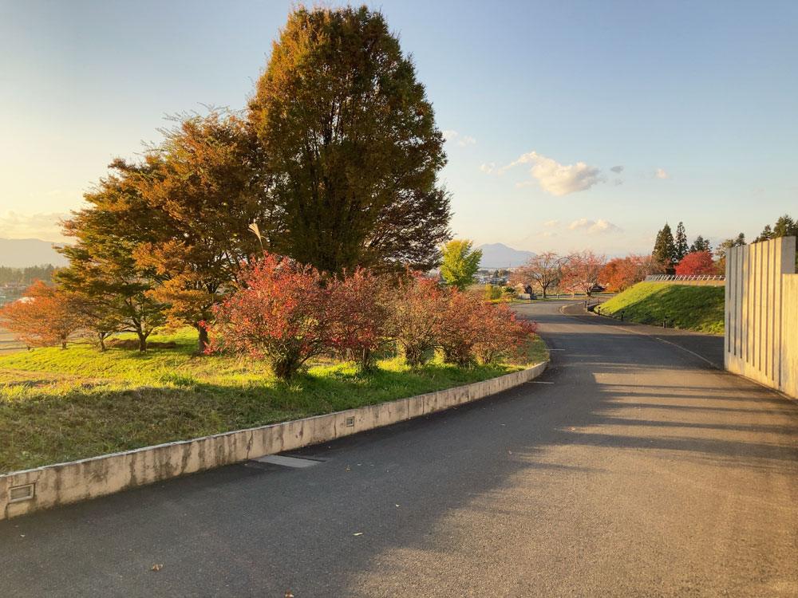
紫波出身の作家・野村胡堂（通称あらえびす）の博物館を目指しながら、付近の観光スポットを巡れるコースです。
神社から博物館、飲食スポットなど様々な分野の観光地へサクッと訪れることができます。
移動時間
約90分
※滞在時間を除く
このコースの移動範囲：中央エリア〜東エリア
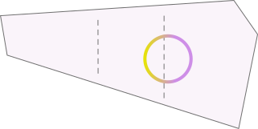
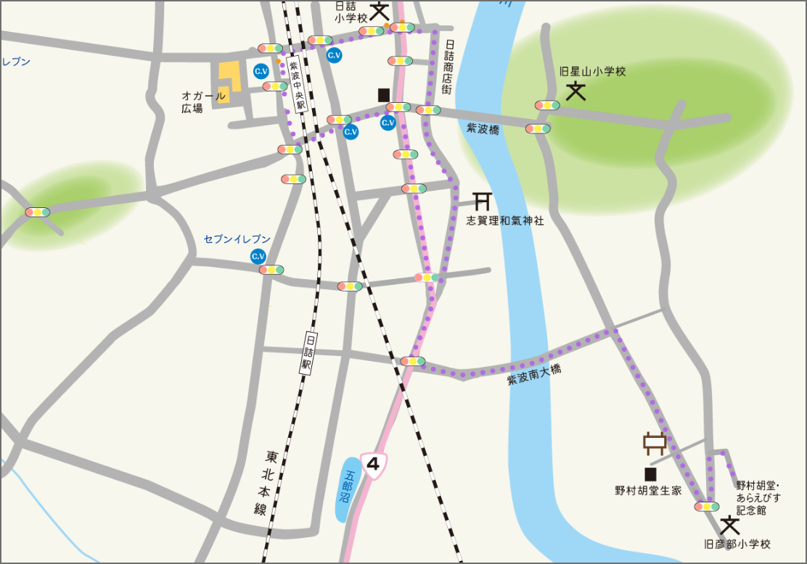
移動時刻シミュレーション
※サイクリング推奨時間帯9:00〜18:00
（▼時計クリックで時刻選択）
に出発！
※滞在時間は含まれませんので、大まかな目安としてお使いください。
※下記のブラウザ以外では動作しないことがあります。
- PC(Google Chrome,Microsoft edge)
- スマートフォン(Safari, Google Chrome)
①スタート：紫波中央駅
8分
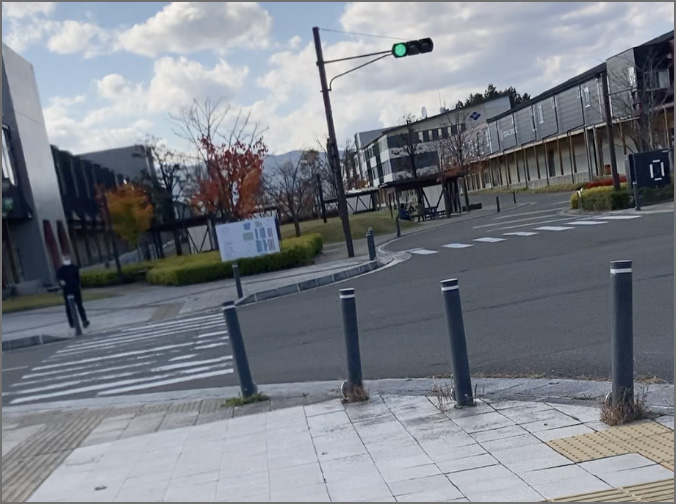
その名の通り、紫波の中央にある駅の前から出発。
道路を出て北側２つ目の信号交差点を右折。国道４号線交差点より奥を目指して直進します。
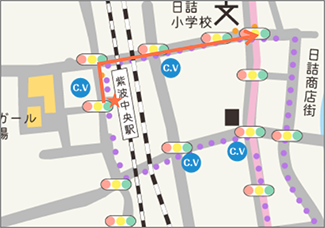
②日詰商店街（北入口）
10分
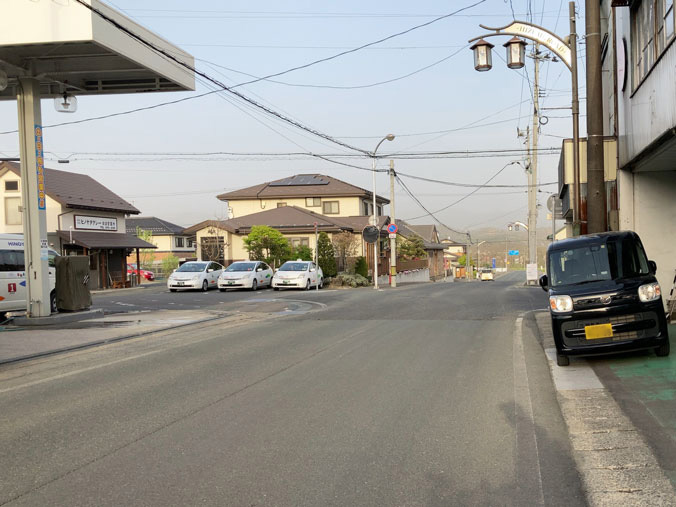
国道４号線の交差点を過ぎると日詰商店街へ入ります。
そのまま直進すると左手に「ヒノヤタクシー」の建物が目印の交差点があるので、そこを右折します。
右折先の日詰商店街大通りには様々な食べ物や雑貨のお店が並んでいます。
時間にゆとりがあれば自転車を止めて、気になるお店を訪れるのも、一つの紫波サイクリングの楽しみ方です。
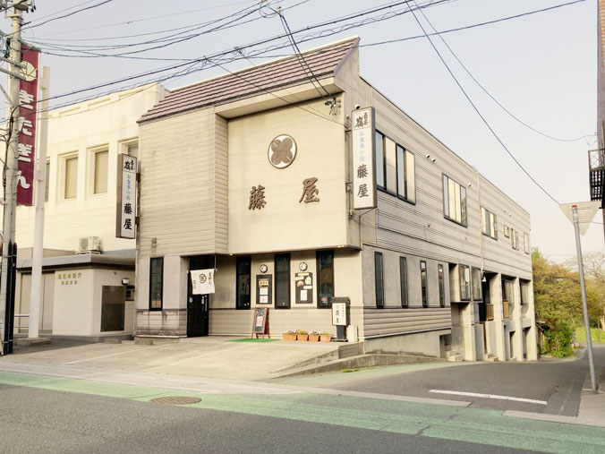
TIPS
大通りの途中にある「藤屋食堂」。 ラーメンやそばなどの麺類や、かつ丼、焼肉丼などの丼ものなどのお食事系から、酒粕使用のフルーツサンドまで、種類豊富のお店！ランチに迷ったらおすすめです。
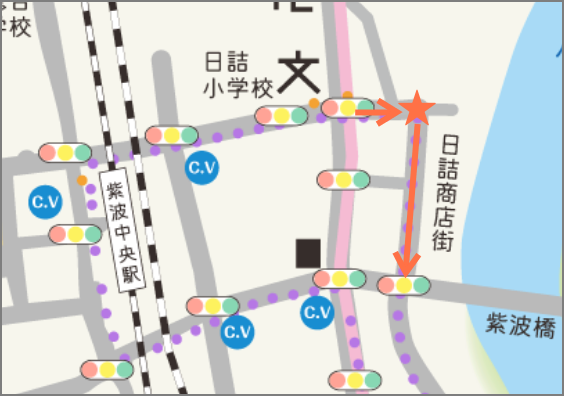
③志賀理和氣神社（赤石神社）入り口
6分
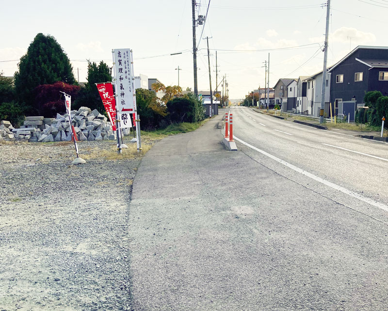
日詰商店街から直進を続けた先に、「志賀理和氣神社」の縦書き看板があるところが入口です。
入ってすぐに「南面の桜」という樹齢700年の大きな桜木がお出迎え。
奥の境内では近頃改築された大きな社殿や、奉られている赤い石などが見られます。 創建千年以上の歴史をもち、地元に親しまれている神社です。
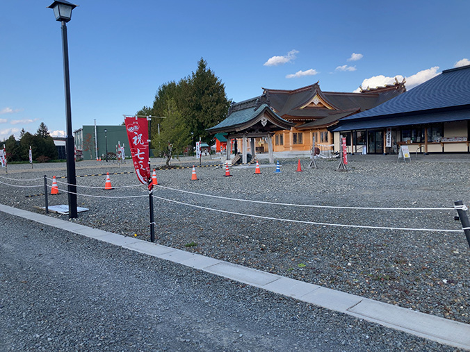
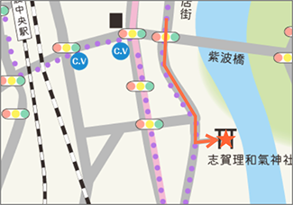
④DCM（国道4号線交差点）
3分
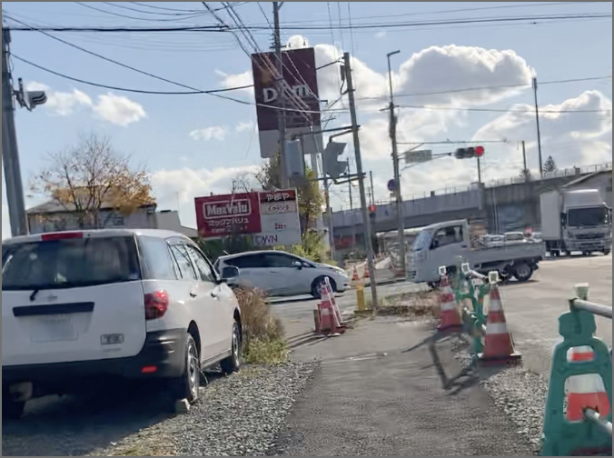
志賀理和氣神社の手前の道路を再び南下し、国道４号線に合流した先に、「DCM」や「マックスバリュ」などの店舗看板の立つ交差点があります。
そこを左折して直進してください。
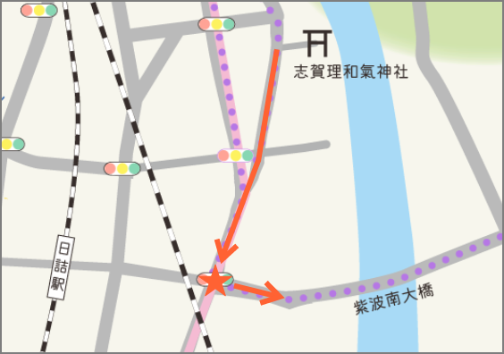
⑤紫波南大橋
10分
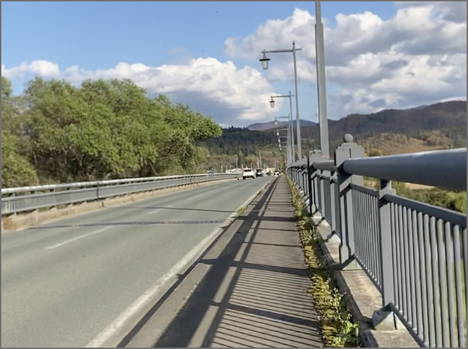
東北最大級の河川・北上川を跨ぐ「紫波南大橋」を渡ります。
ここでは、向こうに見える早池峰山と、両脇に流れる川といった広大な自然の景色を眺めながらのサイクリングが格別です。
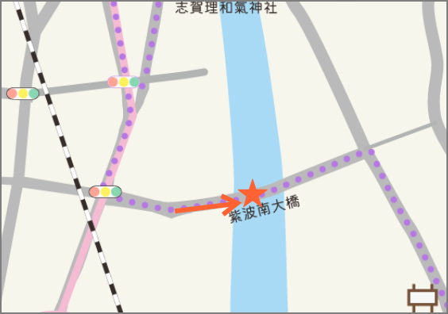
⑥火の見櫓（456号線交差点）
10分
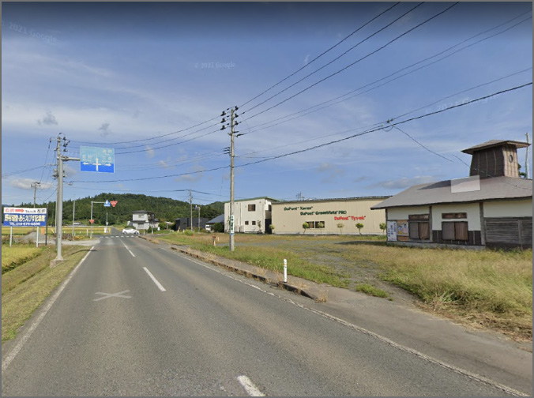
しばらく直進すると、右手に「火の見櫓」（消防団施設）、左手少し奥に「産直センター大巻」のある交差点があります。
そこを右折して直進します。
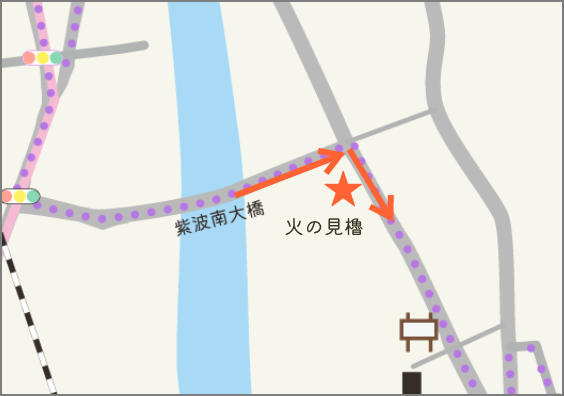
⑦旧彦部小学校校舎
5分
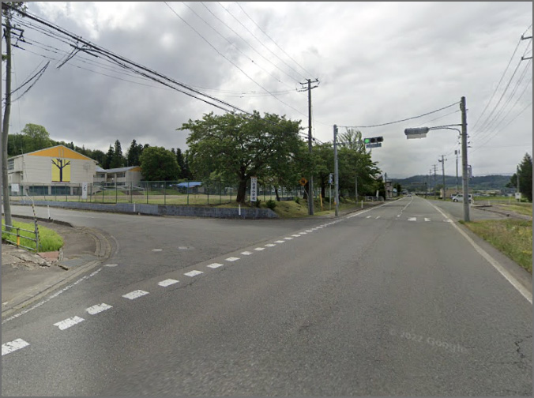
国道456号線を直進する途中に、「彦部小学校※」の校舎が見えます。
※彦部小学校は2023年現在閉校しており、Googleマップに表示されませんので、お見逃しなく！
ここで左折した先の、二股道路の左側を直進してください。
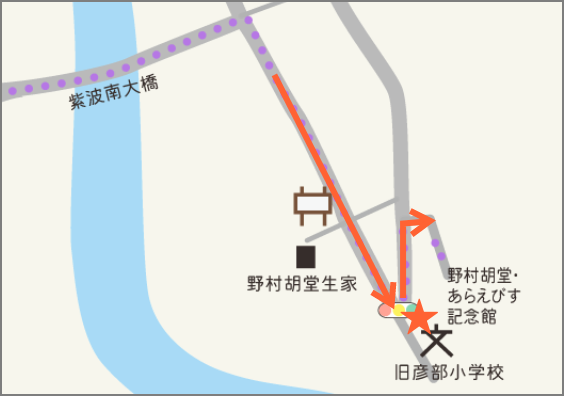
⑧野村胡堂・あらえびす記念館
5分
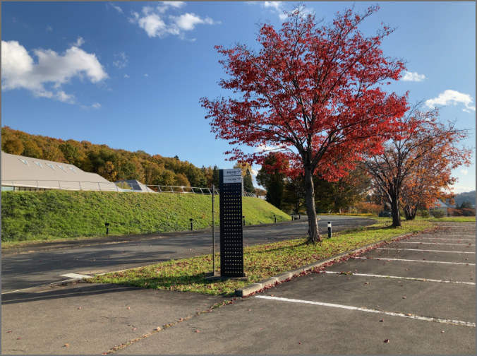
道の途中の「野村胡堂・あらえびす記念館」の青い縦看板の所で右折、その後も右折して回ると、右手に駐車場があるので、端に駐輪しましょう。
奥まで歩くと、紫波町出身の作家・野村胡堂の記念館があります。
「銭形平次」の作者として有名な野村胡堂の生涯を知る展示の他、音楽コレクターとして胡堂が集めていたアナログレコードの視聴会（毎週水）が開かれています。
明治から昭和にかけての歴史を感じるレトロな展示物や音楽鑑賞で、時間を忘れ、ゆったりとした空間を楽しむことができます。
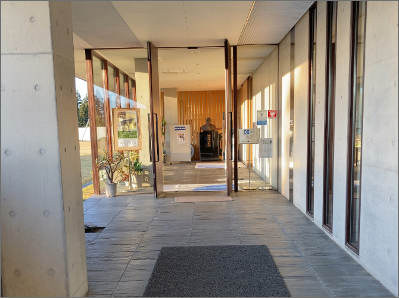
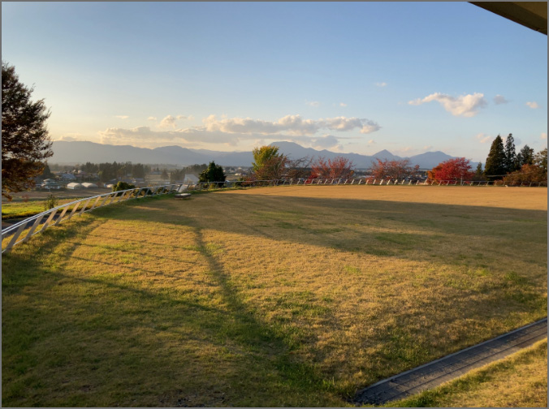
TIPS
本館や駐車場から見下ろすと、自然豊かな町景色が眺められるフォトスポットになっています。高台へ登ってきた達成感と共に眺めを楽しめます。
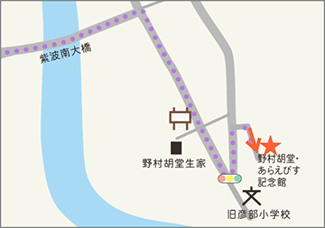
⑨火の見櫓（456号線交差点）
10分
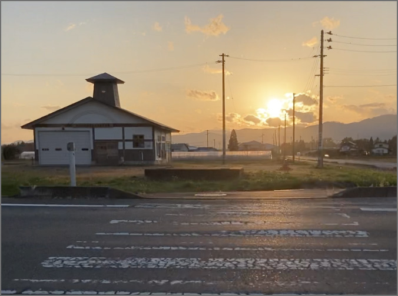
野村胡堂記念館まで来た道を戻り、⑥の火の見櫓まで直進後、左折してください。
季節や時間帯によって空や葉の色が変わる、田園景色をお楽しみください。
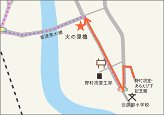
⑩DCM（国道4号線交差点）
10分
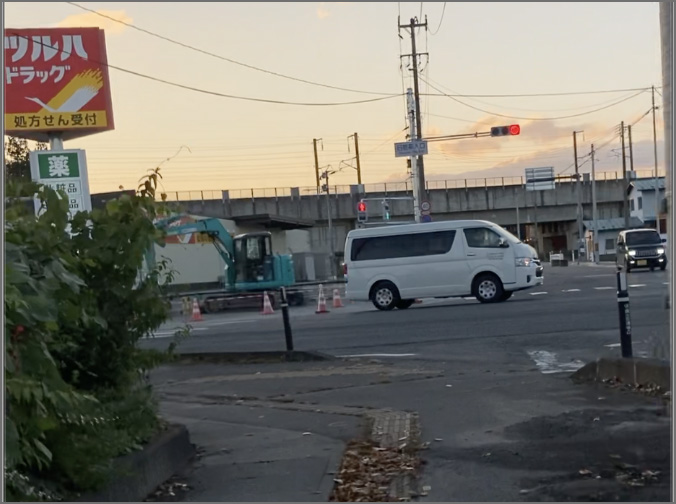
❺の紫波南大橋を渡りながら直進後、再び「DCM」店舗のある交差点 （帰りは「ツルハドラッグ」の看板が目印）に着いたら右折します。そのまま国道４号線を北上しましょう。
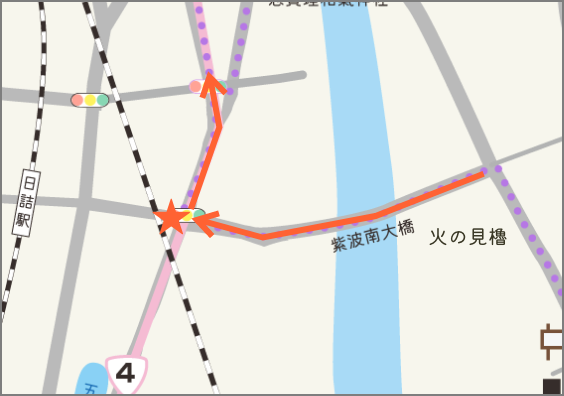
⑪「はらぺこ」
5分
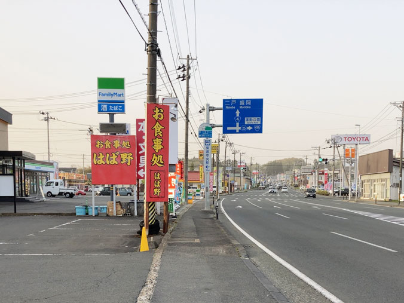
紫波の４号線沿いには、お馴染みのチェーン店から「お食事処はば野」、「はらぺこ※」といった紫波ならではのフードスポットが目白押し。
サイクリングの帰りに、お好きなお店で空いたお腹を満たしましょう！
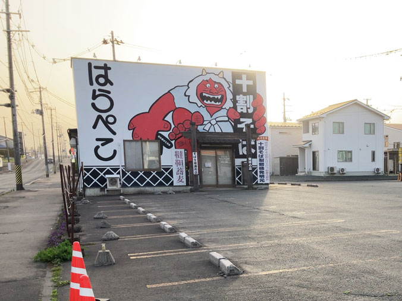
TIPS
※「はらぺこ」営業時間は毎日11:00〜14:30と短いので、気になる方は出発をお早めに！
帰り道は４号線北上途中の「はらぺこ」店舗のある交差点を左折後、直進。高架下を抜けた先すぐの信号交差点を右折します。
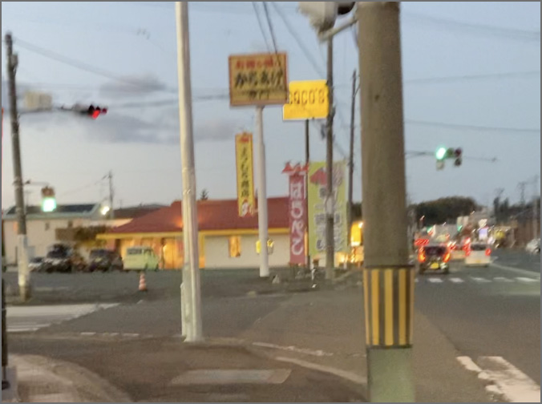
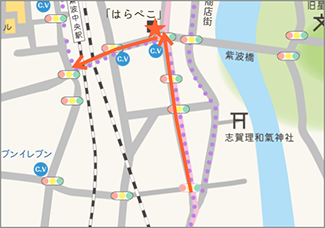
⑫オガール広場前
5分
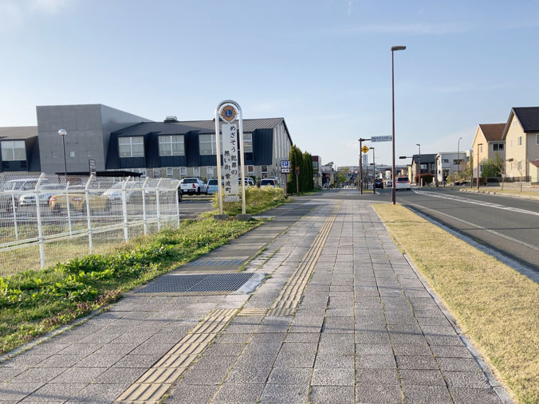
並木道を直進すると、左手にオガールの建物が見えてきます。
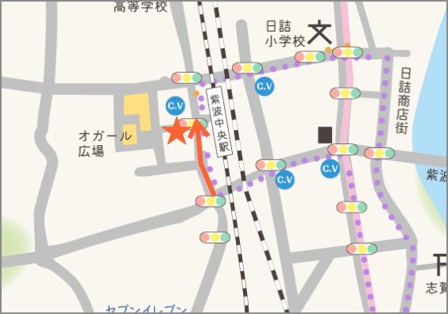
⑬ゴール：紫波中央駅前
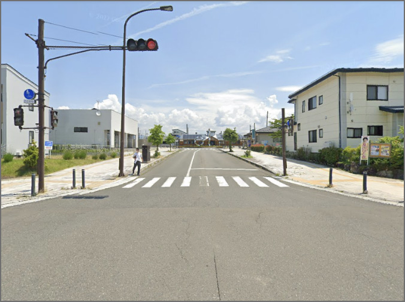
オガール手前の交差点を右折して、紫波中央駅へゴール！
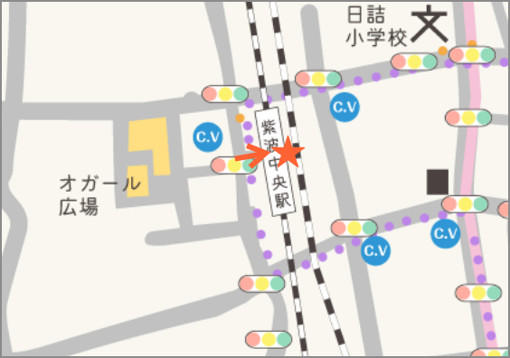